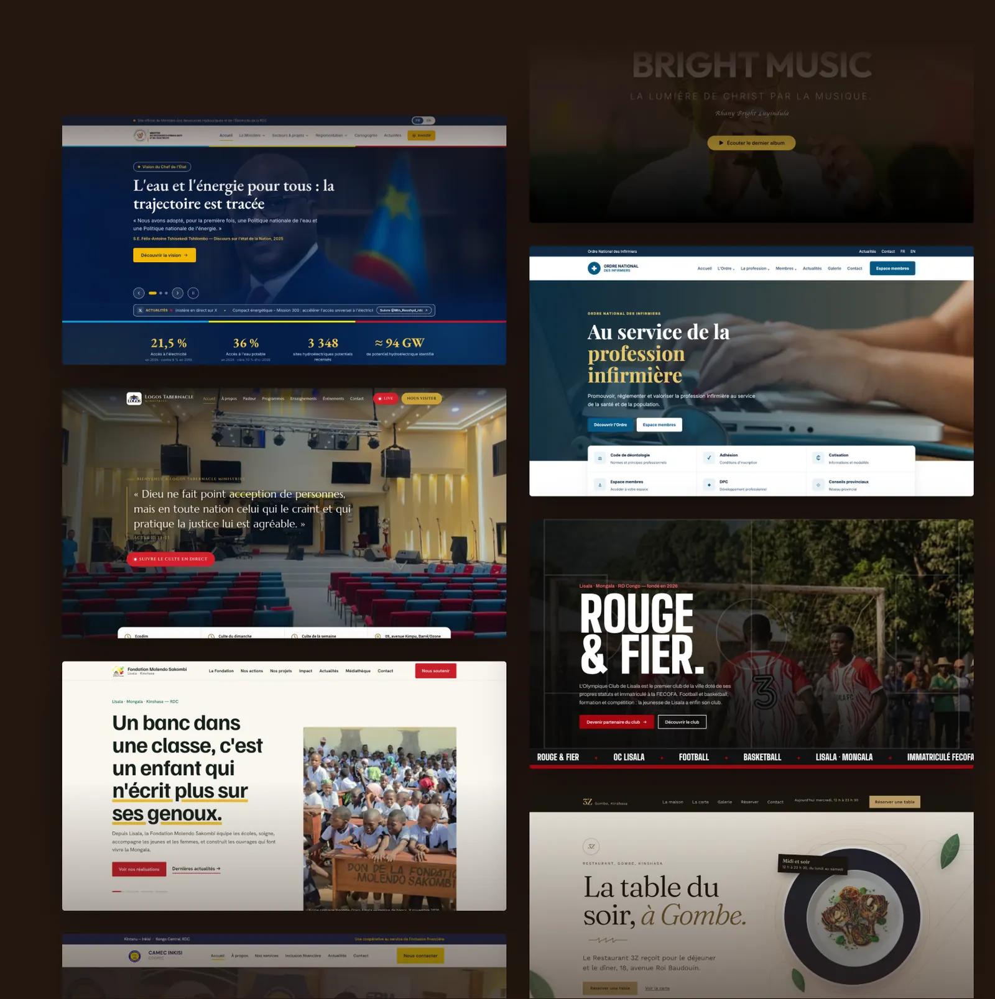
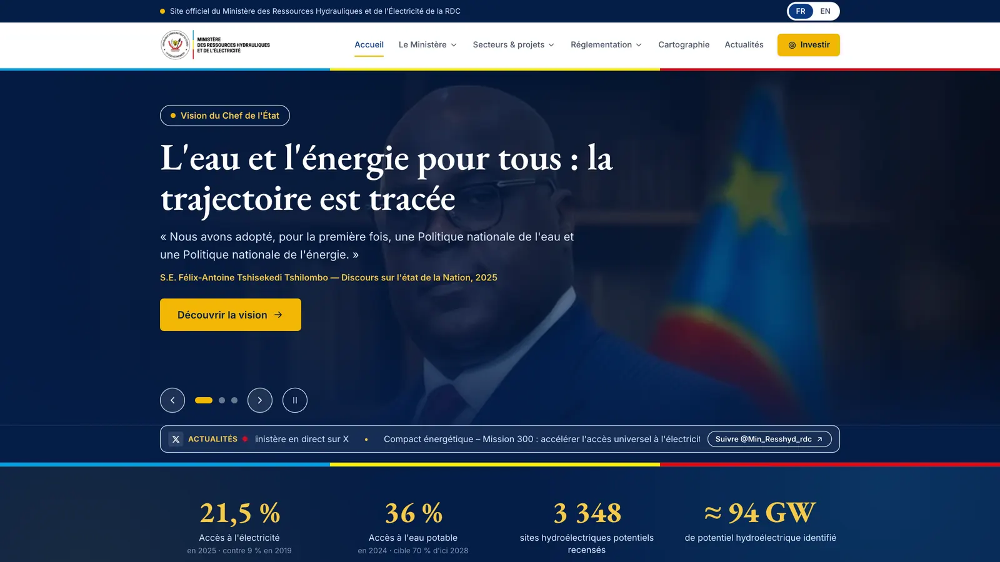
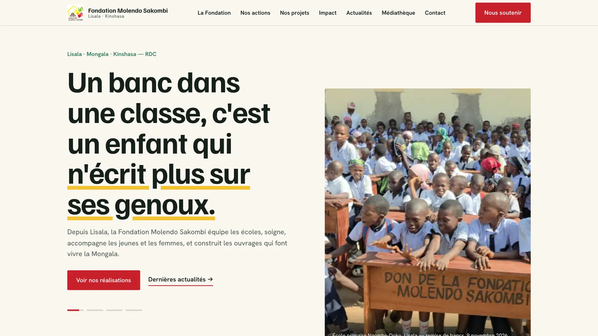
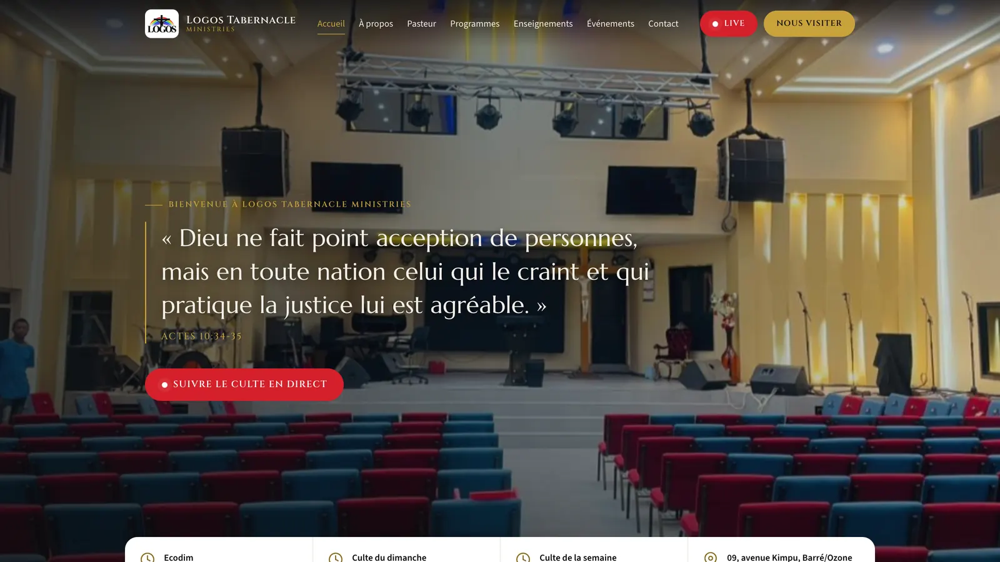
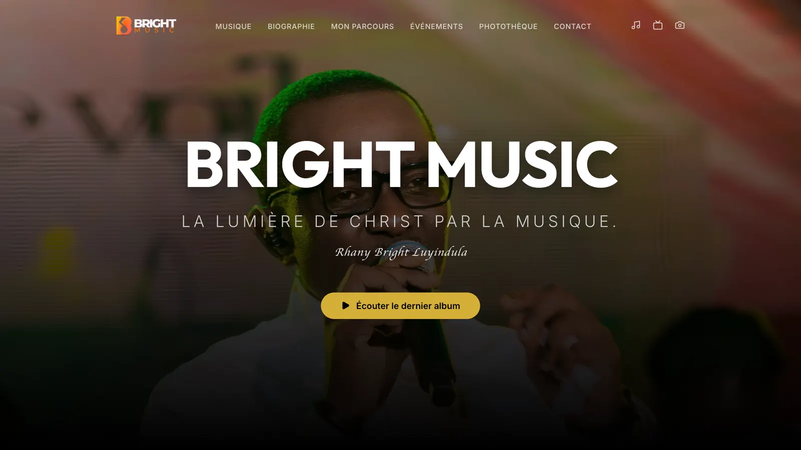
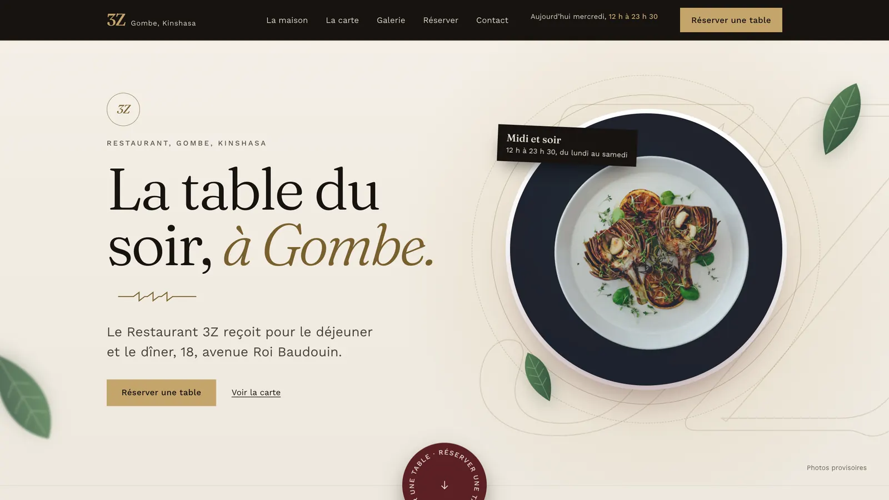
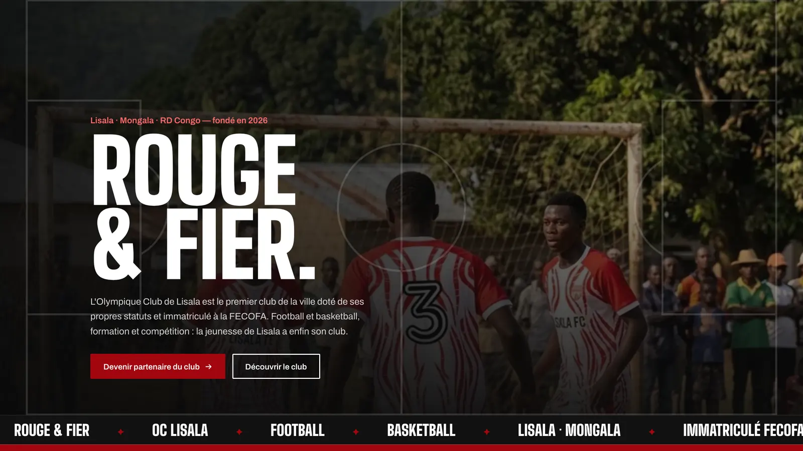
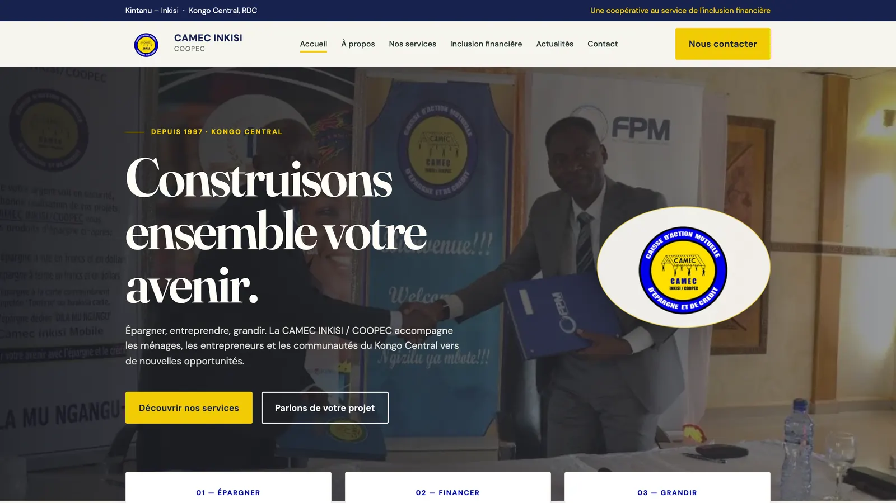

Sites web et données, au Congo et à l’international
John Kalombo, développeur web et data analyst. Des sites pour les ministères, les fondations, les entreprises et les artistes. Des fichiers bruts transformés en décisions.
- Data depuis 2007
- Web depuis 2013
- Français, anglais, lingala
Présentation
Bonjour, je suis John. J’ai passé six ans à vérifier des données de santé, ligne par ligne. Depuis 2013, je construis des sites web avec la même exigence. Vous, de quoi avez-vous besoin ?
Lequel vous ressemble ?
-

Vos chiffres d’abord, vos discours ensuite.
Le ministère ouvre sur quatre chiffres du secteur, en français et en anglais. Le citoyen comprend avant de lire.
Je veux un site comme çaVisiter mrhe.gouv.cd (nouvel onglet)
-

On ne donne pas pour un banc. On donne pour l’enfant assis dessus.
Chaque action se raconte par ce qu’elle change, école par école, ouvrage par ouvrage.
Je veux un site comme çaMaquette
-

Le visiteur cherche l’heure du culte. Il la trouve tout de suite.
Horaires dès le premier écran, et un bouton vers le direct pour ceux qui sont loin.
Je veux un site comme çaVisiter logosministries.vercel.app (nouvel onglet)
-

Un artiste, toutes ses sorties, une seule adresse à partager.
Discographie par année, biographie et photothèque de Rhany Bright Luyindula.
Je veux un site comme çaVisiter brightmusic.uk (nouvel onglet)
-

La table se réserve pendant qu’on a encore faim.
Le client remplit sa réservation sur le site, elle arrive sur le WhatsApp de la maison.
Je veux un site comme çaMaquette
-

Un club attire des supporters. Son site attire des partenaires.
Treize pages, un seul bouton qui compte : devenir partenaire du club.
Je veux un site comme çaMaquette
-
Vos membres n’ont plus à se déplacer pour une information.
Code de déontologie, adhésion et cotisation se trouvent dès l’accueil.
Je veux un site comme çaMaquette
-

Un crédit bien expliqué, c’est un membre qui ose demander.
Épargne, crédit agricole, jeunes entrepreneurs : chaque service a sa page claire.
Je veux un site comme çaMaquette
Votre fichier vous ment peut-être de 420 $
Celui-ci, oui. Passez les trois étapes, vous verrez où.
Excel, SQL, Power BI, Python, R
| Ville | Date | Montant |
|---|---|---|
| Kinshasa | 03/11/2026 | 420 $ |
| kinshasa | 3-11-26 | 420 |
| LUBUMBASHI | 05/11/2026 | 310 $ |
| Lubumbashi | 05/11/2026 | 1 280 $ |
| Goma | 06/11/2026 | vide |
| KINSHASA | 08/11/2026 | 650 $ |
| goma | 09/11/2026 | 540 $ |
Total affiché : 3 620 $. Sept façons d’écrire trois villes.
| Ville | Date | Montant |
|---|---|---|
| Kinshasa | 03/11/2026 | 420 $ |
| Lubumbashi | 05/11/2026 | 310 $ |
| Lubumbashi | 05/11/2026 | 1 280 $ |
| Goma | 06/11/2026 | à demander |
| Kinshasa | 08/11/2026 | 650 $ |
| Goma | 09/11/2026 | 540 $ |
Vrai total : 3 200 $. Une vente comptée deux fois, un montant à redemander.
Lubumbashi pèse la moitié des ventes. Vous savez où mettre votre stock.
Faire ça avec mon fichierDonnées d’exemple.